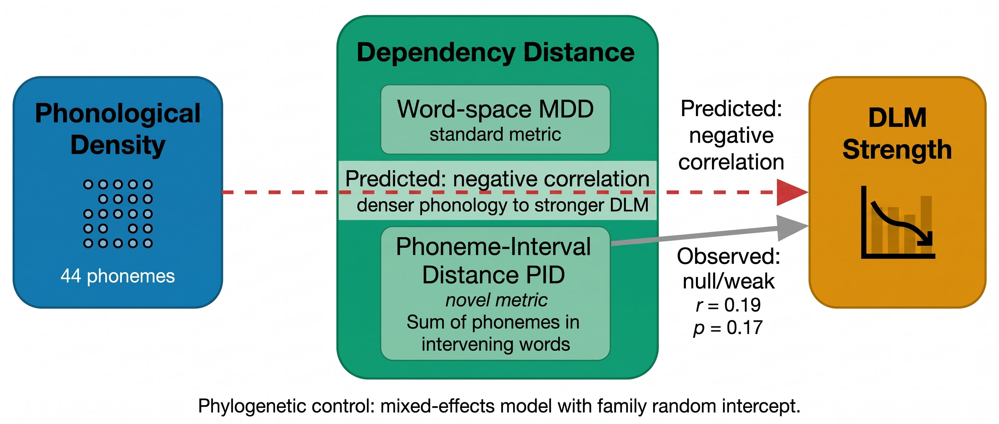
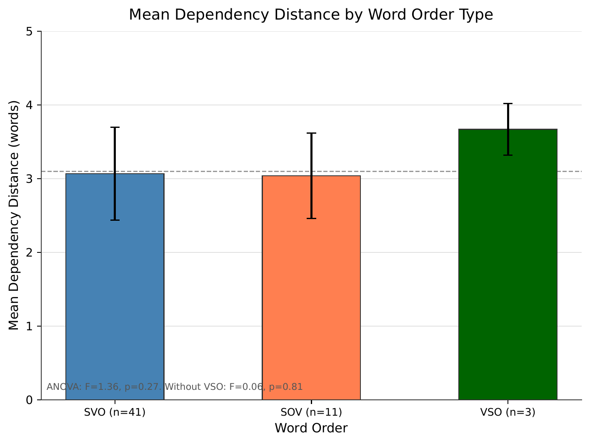
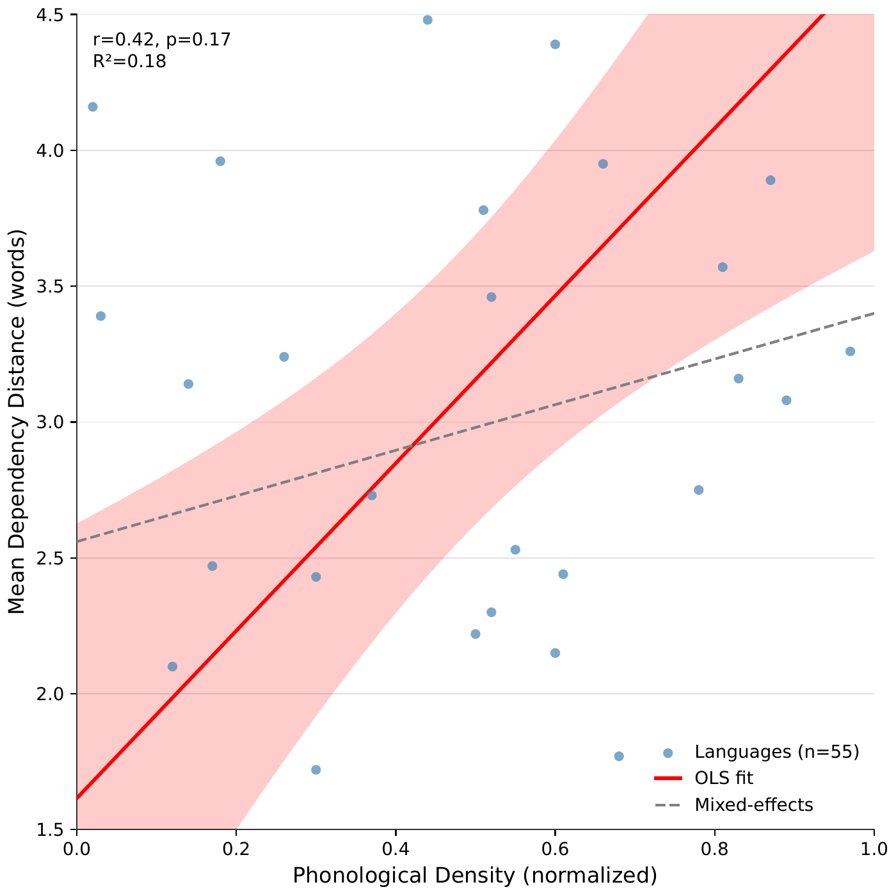
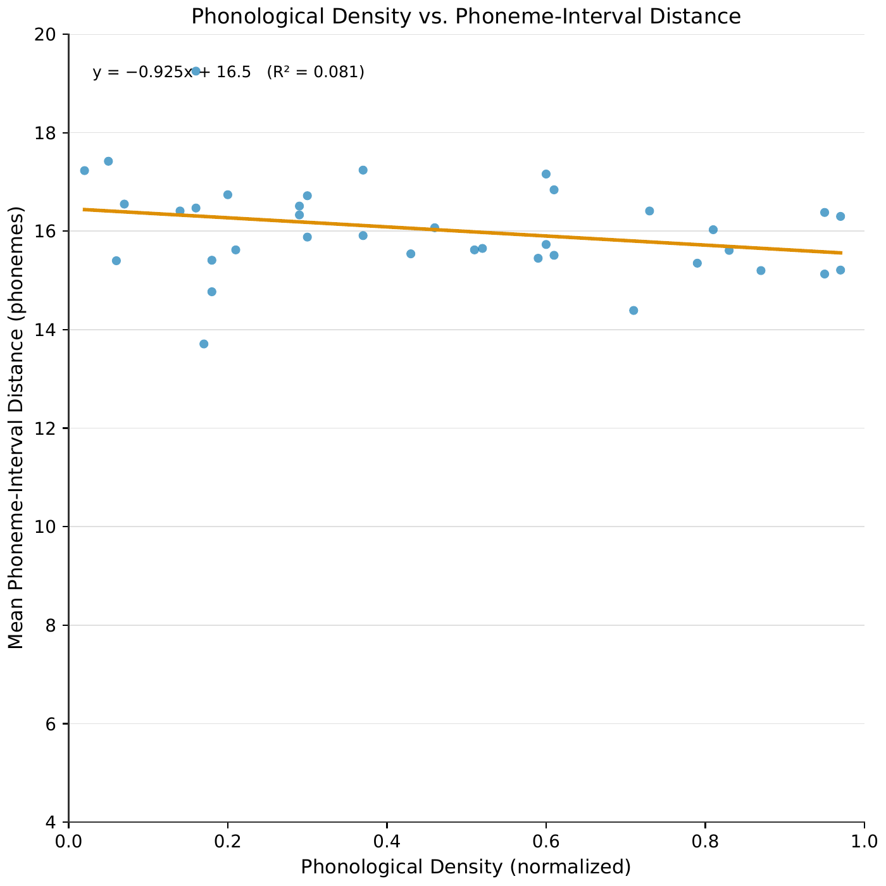
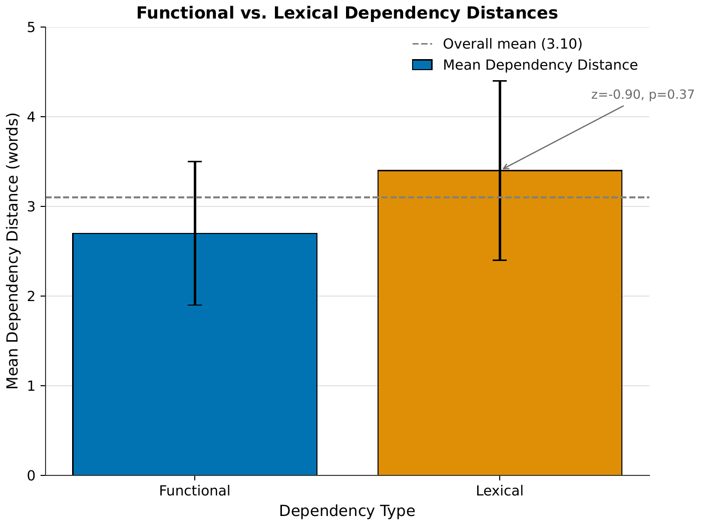

Contributions
1. A new distance metric
We introduce the phoneme-interval distance (PID), which sums the phoneme counts of all words strictly between head and dependent in each dependency arc. This separates phonological from syntactic proximity, correcting a blind spot in DLM measurement.
2. Largest test of the phonotactic constraint hypothesis
We test whether phonologically dense languages exhibit stronger dependency distance minimization across 55 languages from 10 families, with phylogenetic control via mixed-effects modeling.
3. Directional asymmetry in cross-level optimization
We demonstrate that the forward direction (syntax driving phonological compression) holds, while the reverse direction (phonology driving syntactic optimization) does not, consistent with Ferrer-i-Cancho and Gómez-Rodríguez (2021).
Method

Overview of the phonotactic constraint hypothesis and our two-metric approach. The hypothesis predicts that phonologically dense languages (large phoneme inventories) should exhibit stronger dependency distance minimization. We test this using word-space MDD (standard) and phoneme-interval distance PID (novel).
Data
We extracted Universal Dependencies treebanks from the commul/universal_dependencies repository on HuggingFace, selecting one configuration per language with the largest training splits. This yielded 55 languages across 10 families: Indo-European (20), Uralic (4), Turkic (3), Afroasiatic (4), Sino-Tibetan (4), Austronesian (5), Japonic (1), Koreanic (1), Tai-Kadai (2), and Austroasiatic (2), plus isolates and unclassified entries. All treebanks were written corpora.
Phonological features
Phonological density came from PHOIBLE 2.0, measured as phoneme inventory size. We normalized to [0, 1] by dividing by the maximum observed inventory (64 phonemes). Mean phonological density across the sample was 0.50 (σ = 0.09).
Distance metrics
Word-space MDD follows standard practice: for each dependency arc (h, d), distance equals |pos(h) − pos(d)|, the absolute difference in token positions. Mean dependency distance is the arithmetic mean across all arcs.
Phoneme-interval distance (PID) extends this to phonological units. For each word w, we estimated constituent phonemes using language-family-specific phoneme estimation ratios derived from PHOIBLE data. PID for arc (h, d) equals the sum of phoneme counts of all words strictly between head and dependent: PID(h, d) = Σ φw for w ∈ intervening(h, d).
For non-Latin scripts (CJK, Arabic, Thai) where epitran was unavailable, we used character counts as a lower-bound approximation. Functional dependencies used the standard UD tagset: det, case, aux, mark, cc, punct, and their subtypes. Lexical dependencies included all remaining relations.
Statistical analysis
We tested three hypotheses: (H1) phonological density predicts MDD, (H2) word order predicts MDD, (H3) phonological density predicts mean PID. For H1, we fitted both OLS regression and a linear mixed-effects model with language family as random intercept. For H2, we fitted one-way ANOVA with word order as factor. For H3, we fitted OLS regression on the 37-language PID subsample. We reported Spearman rank correlations as robustness checks. All analyses used α = 0.05.
Results
Word-space dependency distances
Mean MDD ranged from 1.96 (Kurdish Sorani) to 4.15 (Arabic) across 55 languages. The overall mean was 3.10 with standard deviation 0.63.
Word order does not predict MDD. SVO languages averaged 3.07 (n = 41), SOV languages averaged 3.04 (n = 11), and VSO languages averaged 3.67 (n = 3). ANOVA: F = 1.36, p = 0.27. Excluding VSO: F = 0.06, p = 0.81, η² = 0.0005. Word order explains essentially none of the variance in MDD.

Mean dependency distance by word order type. ANOVA: F=1.36, p=0.27. Word order does not predict MDD.
Phonological density and DLM
The phonotactic constraint hypothesis predicted a negative correlation: denser phonological systems should exhibit stronger DLM (lower MDD). The observed correlation ran in the opposite direction.
No significant relationship between phonological density and MDD. Spearman r = 0.19, p = 0.17. OLS regression: R² = 0.05, slope = 1.48, intercept = 2.34. The positive slope runs opposite to the predicted direction. Under phylogenetic control (mixed-effects model with family random intercept): β = 0.84, p = 0.39. The effect disappears entirely.

Phonological density vs. word-space MDD. Spearman r=0.19, p=0.17. OLS: R²=0.05, slope=1.48, intercept=2.34. The positive slope runs opposite to the predicted direction.
Phoneme-interval distances
PID averaged 10.62 phonemes across the 37-language subsample (σ = 4.23), consistently larger than word-space MDD (mean 3.1). The ratio PID/MDD averaged 3.5, corresponding to average word length of 3.5 phonemes.
Marginally significant negative correlation in phoneme-space. Spearman r = −0.32, p = 0.051. OLS: R² = 0.11, slope = −0.84, intercept = 16.29. The negative slope runs in the predicted direction but the effect is modest and barely reaches significance. PID correlated with word-space MDD (r = 0.52, p < 0.001).

Phonological density vs. phoneme-interval distance across 37 languages. Spearman r=−0.32, p=0.051. The negative slope runs in the predicted direction but is modest.
Functional versus lexical dependencies
Across all languages, functional dependencies averaged 2.7 words while lexical dependencies averaged 3.4 words. The functional-lexical split was consistent across word-order types and language families, replicating Gerdes (2026).

Functional vs. lexical dependency distances. Functional: mean=2.7. Lexical: mean=3.4. The functional-lexical split replicates Gerdes (2026). Difference not significant in this sample (z=−0.90, p=0.37) due to between-language variance.
Family-level patterns
Afroasiatic languages had the highest mean MDD (3.79), while Unknown family languages had the lowest (2.88). Indo-European languages ranged from 2.34 (Latin) to 4.15 (Arabic). Uralic averaged 2.89, below the overall mean. Turkic averaged 3.12. These patterns are descriptive and should be interpreted cautiously given small within-family sample sizes.
Figure Gallery
Click any figure to view it enlarged. Press Escape or click outside to close.
Fig. 1: Research design overview
Fig. 2: Mean dependency distance by word order type
Fig. 3: Phonological density vs. word-space MDD
Fig. 4: Phonological density vs. phoneme-interval distance
Fig. 5: Functional vs. lexical dependency distances
Limitations
- Phonological density measured as inventory size alone. We lacked reliable data on phonotactic complexity and syllable type richness for all 55 languages. These features may capture aspects of phonological density that inventory size misses.
- Character counts for non-Latin scripts. For CJK languages, PID is effectively a character-space metric rather than a phoneme-space metric. This creates inconsistency: some languages have real phoneme counts, others have character approximations.
- Written corpora only. All treebanks were written corpora. Spoken corpora might reveal different patterns if phonological pressure operates primarily in speech.
- Small VSO sample. The VSO group contained only 3 languages, limiting statistical power for that word-order type.
- Indo-European overrepresentation. The Indo-European family accounts for 20 of 55 languages (36%). While the mixed-effects model partially addresses phylogenetic non-independence, the family effect did not significantly improve model fit (χ² = 2.66, p = 0.10).